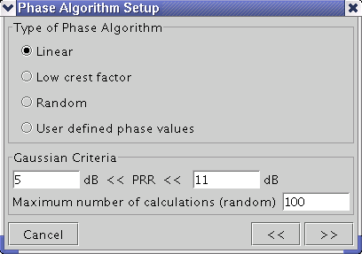

Calculating the Multitone Waveform in the Time Domain
When the tone setup is complete, click the >> button at the bottom of the Multitone Generation dialog window to get to the Phase Algorithm Setup dialog window shown below.

In this dialog window, you select the algorithm to be used to determine the phase shift of each tone of the multitone waveform.
The phase shifts have a significant impact on the shape of the final multitone waveform and are used to control the PRR (Peak-to-RMS-Ratio) of the multitone waveform.
Further, you enter in this window the upper and lower limit for the PRR of the calculated multitone waveform (Gaussian Criteria). The PRR is the ratio of the absolute value of the maximum amplitude of the multitone waveform and the RMS (Root-Mean-Square) of that waveform in dB.
When your entries in the Phase Algorithm Setup dialog window are complete, click the >> button to perform the calculation of the phase shifts and to view the resulting multitone waveform in the time domain.
With the << button, you can get back to the Multitone Generation dialog window to modify your tone definitions.
If the calculated waveform does not match the given limits for PRR, you will be prompted to either accept or reject the calculated waveform.
Functional changes
- Introduced before SmarTest 6.3.2
- SmarTest 6.3.2: The phase algorithm of low crest factor is added.